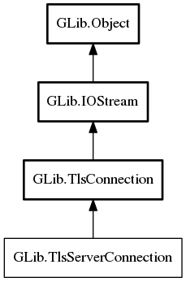

TlsServerConnection
Object Hierarchy:
Description:
TlsServerConnection is the server-side subclass of TlsConnection, representing a server-side TLS connection.
Namespace: GLib
Package: gio-2.0
Content:
Properties:
Static methods:
Inherited Members:
All known members inherited from class GLib.TlsConnection

All known members inherited from class GLib.IOStream
All known members inherited from class GLib.Object